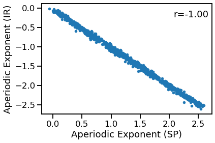

Exponent Comparisons
Contents
Exponent Comparisons¶
This notebook compares methods that directly estimate aperiodic exponents.
Compared methods:
spectral parameterization
IRASA
ToDo:
This notebook is incomplete, and will be fleshed out when the full IRASA explorations are integrated, and can be compared directly to specparam here
import numpy as np
from neurodsp.sim import sim_combined
from neurodsp.utils import set_random_seed
from bootstrap import bootstrap_corr
# Import custom code
import sys; from pathlib import Path
sys.path.append(str(Path('..').resolve()))
from apm.run import run_comparisons
from apm.plts import plot_dots
from apm.utils import format_corr, sampler
from apm.methods import irasa, specparam
from apm.methods.settings import IRASA_PARAMS
from apm.sim.settings import FS, SIM_PARAMS_COMB
Settings¶
# Define settings
f_range = [1, 50]
specparam_params = {'min_peak_height' : 0.05, 'fs' : FS, 'f_range' : f_range}
# Set the random seed
set_random_seed(111)
Collect Methods¶
# Define ranges to sample parameters from
samplers = {'update_comb_exp' : sampler(np.arange(-2.5, 0, 0.1)),
'update_pow' : sampler(np.arange(0, 1, 0.1)),
'update_freq' : sampler(np.arange(5, 35, 1))}
# Define measures to apply
measures = {specparam : specparam_params,
irasa : IRASA_PARAMS}
Run Simulations¶
N_SIMS = 1000
# Run simulations, comparing SpecParam & IRASA, sampling oscillation power
outputs = run_comparisons(sim_combined, SIM_PARAMS_COMB, measures, samplers, n_sims=N_SIMS)
Visualize¶
# Plot the comparison between specparam and IRASA
plot_dots(outputs['specparam'], outputs['irasa'],
xlabel='Aperiodic Exponent (SP)', ylabel='Aperiodic Exponent (IR)')

# Check correlations
corrs = bootstrap_corr(outputs['specparam'], outputs['irasa'])
print(' SP & IR: ', format_corr(*corrs))
SP & IR: r=-0.998 CI[-0.998, -0.998], p=0.000
Conclusions¶
Comparing between these methods, overall we can see that:
In simple cases (powerlaw + oscillations), specparam and IRASA perform very similarly